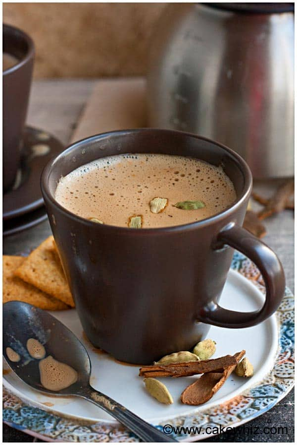

Classic Masala Chai

Time: 20 mins
Ingredients
- 1 cup water
- 1 ½ teaspoons sugar
- 1 whole cardamom pod
- 2 black peppercorns
- 1 whole clove
- 3 teaspoons black tea leaves
- ½ cup warm milk
Preparations
Pour the water in a small saucepan and bring to a boil. Next, add the sugar until it has completely disolved. Add the spices! Combine cardamom pod, clove, peppercorns and tea leaves into the water and sugar. Let the mixture boil for 4-5 minutes. Add your milk to the saucepan and stir. Lastly, strain your chai into a cup. Your masala chai is ready, enjoy!